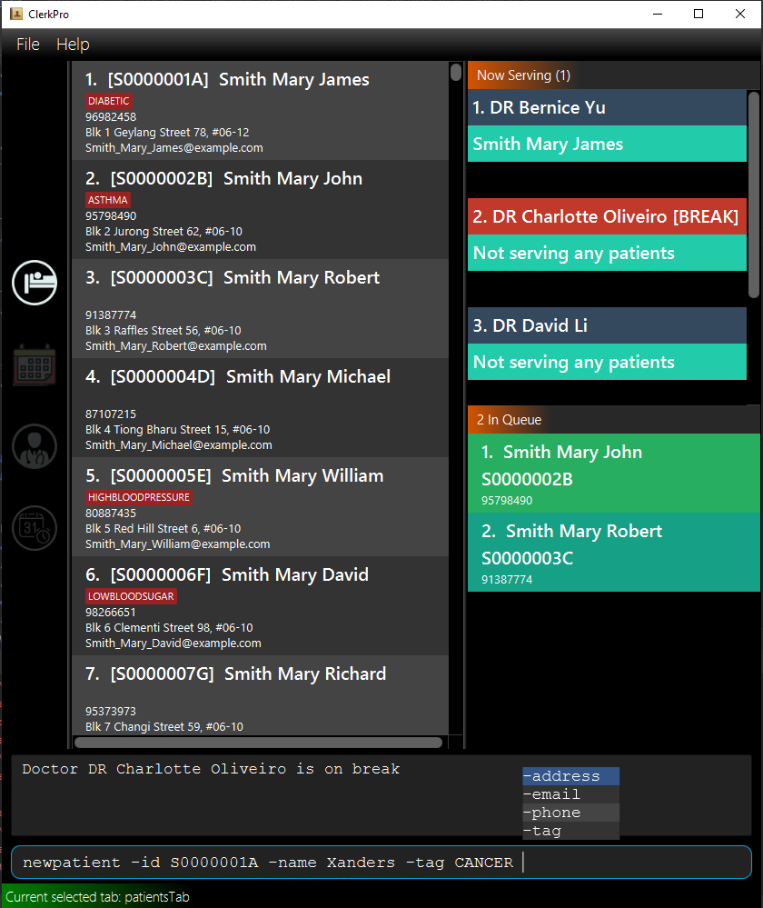
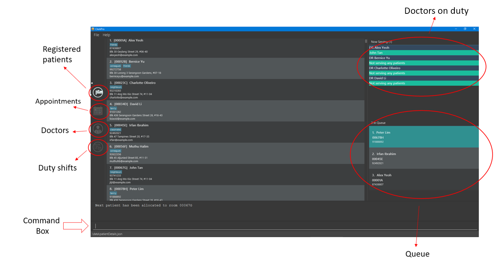

By: T09-3 Since: Sep 2019 Licence: MIT
1. Introduction
This program is targeted at clerks working in small clinics. It is designed for those who prefer to work with a Command Line Interface (CLI). It allows clerks to manage appointments, staff’s duty roster, inventories and queues. Typing fast allows you to complete your tasks much faster than GUI apps.
2. Quick Start
-
Ensure you have Java
11or above installed in your Computer. -
Download the latest
clerkPro.jarhere. -
Copy the file to the folder you want to use as the home folder for ClerkPro.
-
Double-click the file to start the app. The GUI should appear in a few seconds.
 -
You may navigate through the entire UI with UP, DOWN, LEFT, RIGHT and TAB.
-
The figure below shows the layout.
 -
Type the command in the command box and press Enter to execute it.
e.g. typinghelpand pressing Enter will open the help window. Alternatively, just press F1. -
Some example commands you can try:
-
register -id 001A -name John Doe -phone 98765432 -email johnd@example.com -address John street, block 123, #01-01: registers a patient namedJohn Doe. -
enqueue 001A: enqueues patient with reference id001Ainto the queue. The patient001Amust be registered. -
exit: exits the app.
-
-
Refer to Section 3, “Features” for details of each command.
3. Features
AutoComplete & History
-
When the command box is blank, UP & DOWN will auto-fill the command box with commands previously entered. UP gives older commands and DOWN gives newer commands.
-
When the command box is not blank, AutoComplete will come into action and tries to suggest commands that are available for whatever that has been typed. During which, you may traverse your selection of the suggestions via UP & DOWN then press ENTER to confirm selection.
Command Format
-
Words in
<UPPER_CASE>are the parameters to be supplied by the user e.g. inregister -name <NAME>,NAMEis a parameter which can be used asregister -name John Doe. -
Items in square brackets are optional e.g
-name <NAME> [-tag <TAG>]can be used as-name John Doe -tag friendor as-name John Doe. -
Items with
… after them can be used multiple times including zero times e.g.[-tag <TAG>]…can be used as-tag friend,-tag friend -tag familyetc. -
Parameters can be in any order e.g. if the command specifies
-name <NAME> -phone <PHONE_NUMBER>,p/<PHONE_NUMBER> n/<NAME>is also acceptable. -
A Reference Id refers to a case-insensitive string of 3 to 10 (inclusive) alphanumeric characters that can be used to uniquely identify a person, such as a membership number or NRIC. A
<PATIENT_REFERENCE_ID>refers to the reference id which belongs to a patient. Whereas, a<STAFF_REFERENCE_ID>refers to the reference id of a staff doctor. Words in<UPPER_CASE>are the parameters to be supplied by the user e.g. inregister -name <NAME>,NAMEis a parameter which can be used asregister -name John Doe.
| All timings are based on the system’s clock. |
3.1. Patient Management
3.1.1. Searches patient by arguments: patient
Filters patients whose reference ids, names or phone number contains the given keyword.
If no search keyword is provided, all registered patients will be displayed.
Format: patient [<SEARCH_KEYWORD>]
3.1.2. Registers a new patient: register
Registers a new patient. Only patient’s reference id and name are compulsory fields
Format: newpatient -id <PATIENT_REFERENCE_ID> -name <PATIENT_NAME> [-phone <PHONE_NUM>]
[-email <EMAIL>] [-address <ADDRESS>] [-tag <Tags>]…
As a design decision, undoing the registration of a patient is allowed, via the undo command.
However, though our target users are clerks working at clinics, our clients would be the employers and stakeholders of said clinics.
Hence, the user should not have administrative privilege to unregister any patient already in the system.
|
3.1.3. Updates patients’ profiles: edit
Updates the particulars of a patients
|
Must be in the patient listing screen for this command to be accepted. |
|
Editing tags will overwrite all existing tags. |
Format: editpatient -entry <ENTRY_ID> [-id <PATIENT_REFERENCE_ID>] [-name <NAME>] [-phone <PHONE_NUM>]
[-email <EMAIL>] [-address <ADDRESS>] [-tag <Tags>]…
3.2. Staff Personal Management
3.2.1. Searches staff doctor by arguments: doctor
Filters staff doctor whose reference ids, names or phone number contains the given keyword.
If no search keyword is provided, all registered doctors will be displayed.
Format: doctor [<SEARCH_KEYWORD>]
3.2.2. Registers a new doctor: newdoctor
Registers a new doctor. Only doctor’s reference id and name are compulsory fields
Format: newdoctor -id <STAFF_REFERENCE_ID> -name <NAME> [-phone <PHONE_NUM>]
[-email <EMAIL>] [-address <ADDRESS>] [-tag <TAGS>]…
As a design decision, undoing the registration of a staff doctor is allowed, via the undo command.
However, though our target users are clerks working at clinics, our clients would be the employers and stakeholders of said clinics.
Hence, the user should not have administrative privilege to unregister any staff doctor already in the system.
|
3.2.3. Updates a doctor’s profile: updatedoctor
If user is in the doctors listing screen, updates any change for doctor’s profiles.
|
Must be in the staff listing screen for this command to be accepted. |
|
Editing tags will overwrite all existing tags. |
Format: editdoctor -entry <ENTRY_ID> [-id <STAFF_REFERENCE_ID>] [-name <NAME>] [-phone <PHONE_NUM>]
[-email <EMAIL>] [-address <ADDRESS>] [-tag <Tags>]…
3.2.4. Marks the doctor as on-duty: onduty
Marks the doctor, based on the index given, as on-duty and adds him/her to a list of on-duty doctors.
Format: onduty <ON_DUTY_DOCTOR_ENTRY_ID>
3.2.5. Marks the doctor as off-duty: offduty
Marks the doctor, based on the index given, as off-duty and removes him/her from the list.
Format: offduty <ON_DUTY_DOCTOR_ENTRY_ID>
3.3. Queue Management
3.3.1. Adds a patient to the queue: enqueue
Adds a patient to the queue based based on the patient’s Id. The enqueued patient must be a registered. Staff members cannot be enqueued.
Format: enqueue <PATIENT_REFERENCE_ID>
3.3.2. Removes a patient from the queue: dequeue
Removes a patient from the queue based on their queue position.
Format: dequeue <QUEUE_INDEX>
3.3.3. Assigns next patient to an available doctor : next
Assigns the next patient in the queue to a doctor..
Format: next <ENTRY_ID>
3.3.4. Doctor takes a break: break
Avoids directing patients to a doctor. e.g. Doctor is on a lunch break
Format: break <ENTRY_ID>
3.3.5. Doctor resumes his/her duty: resume
Allows patients to be directed to a doctor. e.g. Doctor is back from his/her break.
Format: resume <ENTRY_ID>
3.4. Appointment Management
3.4.1. Displays appointments: appointments
Displays a sorted list of upcoming appointments for the patient that is associated to the given REFERENCE_ID.
If no keyword is given, all upcoming appointments will be displayed.
Format: appointments [<REFERENCE_ID>]
3.4.2. Schedules an appointment: addappt
Schedules a new appointments for a patient.
NOTE: The appointment will be rejected by the system, if there are insufficient staff doctors on duty at the time of the appointment.
e.g. Cannot schedule more appointments than available doctors on duty.
If both -rec <INTERVALS> and -num <NUMBER_OF_TIMES> fields are present, appointments of these <NUMBER_OF_TIMES> will be added to the patient
appointment schedule in <INTERVALS>. Otherwise, only one event will be added.
If the optional field [-end <END_TIMING>] is absent, default end timing is 30 mins after start timing of the appointment. Otherwise, end Timing will be [-end <END_TIMING>].
The optional field [-rec <INTERVALS>] can be -rec w, -rec m, or -rec y.They represent to add weekly, monthly, yearly repeat appointment respectively.
Format: newappt -id <PATIENT_REFERENCE_ID> -start <START_TIMING> [-end <END_TIMING>] [-rec <INTERVALS> -num <NUMBER_OF_TIMES>]
3.4.3. Acknowledges a appointment: ackappt
Acknowledges an existing appointment once the patient has arrived
Format: ackappt <REFERENCE_ID>
3.4.4. Cancels an appointment: cancelappt
Cancels the specified appointment.
To avoid accidental cancellation of another patient’s appointments, the user must first narrow down the search to a single patient using the appointments [<REFERENCE_ID>] command. |
Format: cancelappt <ENTRY_ID>
3.4.5. Changes the appointment date: changeappt
Changes the timing for an existing appointment.
If no optional fields [-end <END_TIMING>] is present, default endTiming is 30 mins after startTiming. Otherwise new endTiming will be [-end <END_TIMING>].
To avoid accidental rescheduling of another patient’s appointments, the user must first narrow down the search to a single patient using the appointments [<REFERENCE_ID>] command. |
|
The operation is rejected if there are insufficient staff doctors on duty at the time of the new appointment. |
Format: editappt -entry <ENTRY_ID> -start <START_TIMING> [-end <END_TIMING>]
3.4.6. Lists patients who have missed their appointments: missappt
Lists all appointments that are missed.
| An appointment is considered missed if the appointment was not acknowledged and the current time has passed the appointment’s end time. |
Format: missappt
3.4.7. Sets missed appointments as settled/notified: settle
Settles and removes the missed appointment based on the given index.
Settling refers to the user following up on contacting the patient who has missed his/her appointment.
Only missed appointments can be settled. The user must first display the missed appointment listing, using missappt, before using this command. |
Format: settle <ENTRY_ID>
3.4.8. Shows the empty slots: slot (v2.0)
List all the available empty slots for patients to make appointments
Format: slot -start <START_DATE>
3.5. Duty-shift Management
3.5.1. Displays duty shifts: shift
Displays a sorted list of upcoming duty shifts for the staff doctors that is associated to the given REFERENCE_ID.
If no keyword is given, all upcoming appointments will be displayed.
Format: shifts [<REFERENCE_ID>]
3.5.2. Adds a duty shift for a doctor: addshift
Adds a new duty shift for a doctor.
If both -rec <INTERVALS> and -num <NUMBER_OF_TIMES> fields are present, duty shifts of these <NUMBER_OF_TIMES> will be added to the doctor duty roster in <INTERVALS>.
Otherwise, only one shift will be added.
Format: newshift -id <STAFF_REFERENCE_ID> -start <START_TIMING> -end <END_TIMING> [-rec REPEATEDLY -num REPEATED_TIMES]
3.5.3. Cancels a duty shift for a doctor: cancelshift
Cancels the specified duty shift for a doctor based on the given entry index.
To avoid accidental cancellation of another doctor’s shift, the user must first narrow down the search to a single doctor using the shift [<REFERENCE_ID>] command. |
|
The operation is rejected if it results in there being more appointments than staff doctors on duty at any given point in time. The appointments affected by the deletion of the duty shift must be resolved first. |
Format: cancelshift <ENTRY_ID>
3.5.4. Changes the duty shift for a doctor: changeshift
Changes the timing of an existing duty shift based on the given entry index.
To avoid accidental cancellation of another doctor’s shift, the user must first narrow down the search to a single doctor using the shift [<REFERENCE_ID>] command. |
|
The operation is rejected if it results in there being more appointments than staff doctors on duty at any given point in time. |
The patient’s appointment affected by the deletion of the duty shift must be resolved first.
Format: editshift -entry <ENTRY_ID> -start <START_TIMING> -end <END_TIMING>
3.6. Inventory Commands (v2.0)
3.6.2. Views the inventory: prescription (v2.0)
Displays the prescription. A prescription is a list of medications prescribed by the doctor.
Format: prescription <PRESCRIPTION_ID | PRESCRIPTION_NAME>
3.7. User Accounts (v2.0)
3.7.1. Login: login (v2.0)
Login with your username and password. The user will then be prompted to enter their password.
Format: login <USER_NAME>
3.8. General Commands
Note: Search actions refers to the patient, doctor, appointments and shift commands.
4. Commands Summary
-
Patient Management
-
Search for patient using reference Id, name or phone number:
patient [<SEARCH_KEYWORD>] -
Register new patient:
newpatient -id <PATIENT_REFERENCE_ID> -name <PATIENT_NAME> [-phone <PHONE_NUM>] [-email <EMAIL>] [-address <ADDRESS>] -num [-tag <Tags>]… -
Edits patient details:
editpatient -entry <ENTRY_ID>[-id <PATIENT_REFERENCE_ID>] [-name <NAME>] [-phone <PHONE_NUM>] [-email <EMAIL>] [-address <ADDRESS>] -num [-tag <Tags>]…
-
-
On-Duty Doctors Management
-
Search for doctors using reference Id, name or phone number:
doctor [<SEARCH_KEYWORD>] -
Register new doctor:
newdoctor -id <STAFF_REFERENCE_ID> -name <NAME> [-phone <PHONE_NUM>] [-email <EMAIL>] [-address <ADDRESS>] [-tag <TAGS>]… -
Edit doctor details:
editdoctor -entry <ENTRY_ID> [-id <STAFF_REFERENCE_ID>] [-name <NAME>] [-phone <PHONE_NUM>] [-email <EMAIL>] [-address <ADDRESS>]-num -
Mark doctor as on-duty:
onduty <ENTRY_ID> -
Mark doctor as off-duty:
offduty <ENTRY_ID>
-
-
Queue Management
-
enqueue:
enqueue <PATIENT_REFERENCE_ID> -
dequeue:
dequeue <QUEUE_INDEX> -
Assigns next Patient in queue to doctor:
next <DOCTOR_ENTRY_ID> -
Marks doctor on break:
break <DOCTOR_ENTRY_ID> -
Marks doctor on resuming work:
resume <DOCTOR_ENTRY_ID>
-
-
Appointment Management
-
Search for appointments:
appointments [<REFERENCE_ID>] -
Add new appointment:
newappt -id <REFERENCE_ID> -start <START_TIMING> [-end <END_TIMING>] [-rec <INTERVALS> -num <NUMBER_OF_TIMES>] -
Edit appointment:
editappt -entry <ENTRY_ID> -start <START_TIMING> [-end <END_TIMING>] -
Cancel appointment:
cancelappt <ENTRY_ID> -
Acknowledge arrival of patient for appointment:
ackappt <REFERENCE_ID> -
List all missed appointments:
missappt -
Mark missed appointment as settled:
settle <ENTRY_ID>
-
-
Duty-shift Management
-
Search for shift:
shifts [<REFERENCE_ID>] -
Add new shift:
newshift -id STAFF_REFERENCE_ID -start <START_TIMING> -end <END_TIMING> [-rec <INTERVALS> -num <NUMBER_OF_TIMES>] -
Change shift:
editshift -entry <ENTRY_ID> -start <START_TIMING> -end <END_TIMING> -
Cancel shift:
cancelshift <ENTRY_ID>
-
-
Inventory commands (v2.0)
-
inventory:
inventory -
prescription:
prescription <PRESCRIPTION_ID | PRESCRIPTION_NAME>
-
-
User Accounts (v2.0)
-
login:
login <USER_NAME> -
logout:
logout
-
-
General Commands
-
help:
help -
exit:
exit -
undo:
undo -
redo:
redo
-